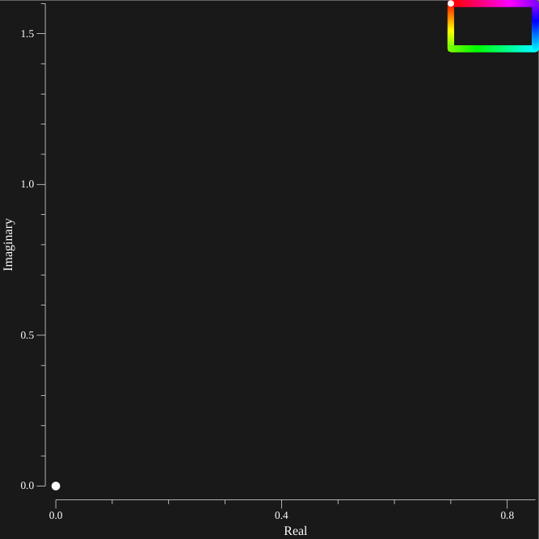
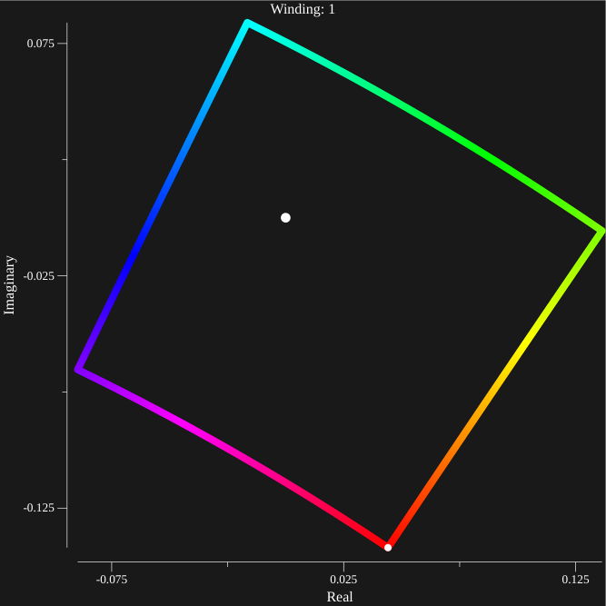

Case II
Explanation
This page deals with Case II as described on the homepage, which results in the complex zeroes. We apply the argument principle in order to obtain an approximate location of the zeroes. The argument principle states that for meromorphic functions

The left hand side is a countour integral in counter clockwise direction along a complex path (like the one shown in white). It evaluates to the number of counter clockwise revolutions around the origin that the output of \(f(z)\) has. The argument principle states that this value equals the number of zeroes (Z/blue) minus the number of poles (P/red). This means in this case the integral will evaluate to \(4-5=-1\)
In our case we approximate the function
by approximating f(λ), g(λ) to a reasonable depth where increases of depth cause no noticable changes. Then we plot many (about 1000) points along a countour in order to get a smooth curve. From the plot of F(λ) we can determine the winding number, and if it is positive we know there is at least one zero. Then we contract the contour in order to locate the zero more precisely.
Example

Given the contour above, a few examples of f(λ) where λ follows this contour in a counterclockwise manner are shown below. One can tell the direction of the graph traveling along the contour from Red to Green To Blue with the white dot as the starting point.
The case p=[2, 0] q[-1,-1] α=1 is discussed as an example. We approximate it at depth=51, however higher depths appear to cause no significant changes.

Zeroes
Given the source contour (left), a square with corners (0.7, 1.6) and (0.85, 1.45). And the resulting contour (right), approximated at depth=80.
 {kind=link}